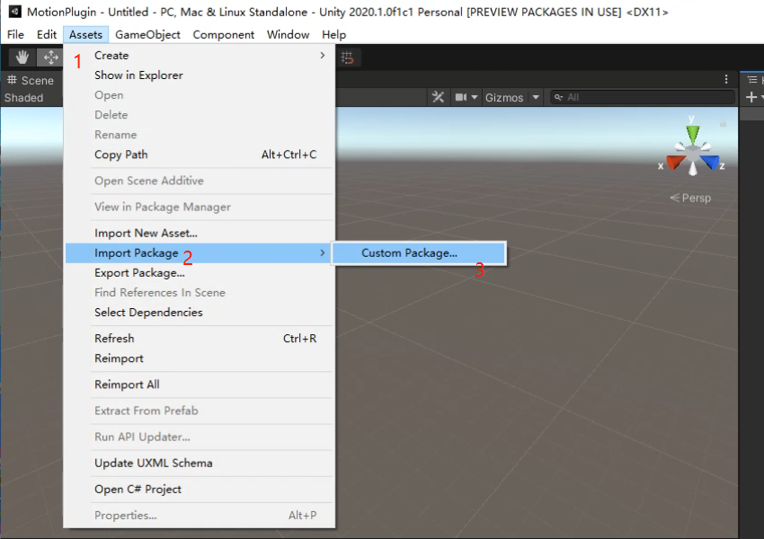
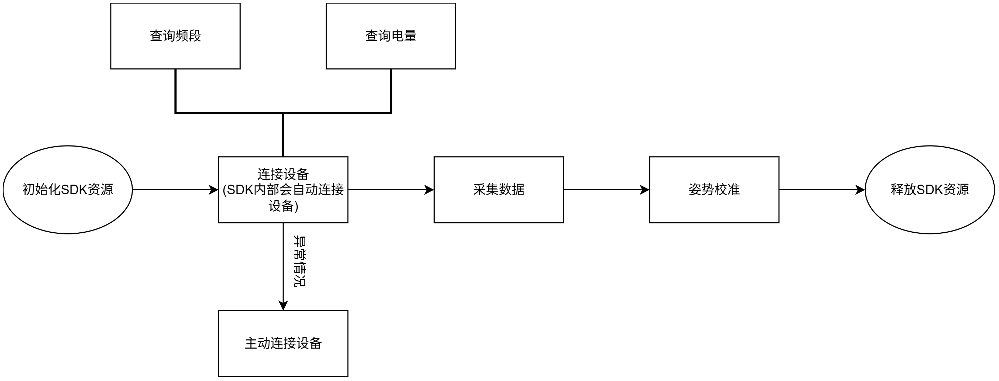
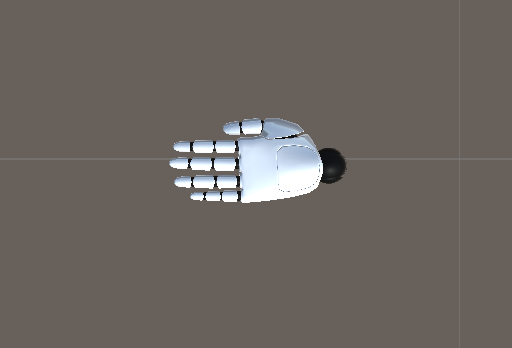
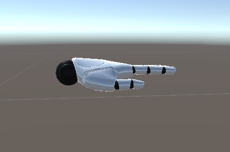
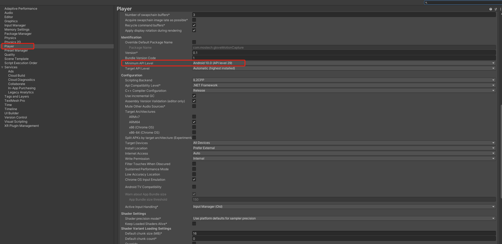
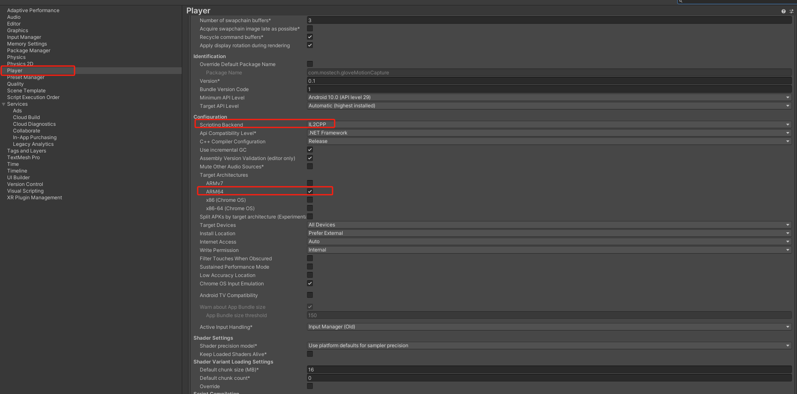

Unity Motion Capture Plugin (Data Glove + Android) Documentation
Introduction
This document will help you use the game engine Unity 3D to obtain data glove data through this SDK and correctly drive the hand model.
Importing the Unity Motion Capture Plugin Package into the Project
Motion capture glove plugin package
| Plugin File | Version | Date | Update Log |
|---|---|---|---|
| mostechPlugin_Android_V1.1.0.unitypackage | V1.1.0 | 2024-11-04 | [New] 1. Supports self-developed glove devices |
| mostechPlugin_Android_V1.0.0.unitypackage | V1.0.0 | 2024-10-17 | [New] 1. Collector glove real-time data 2. Pose calibration 3. Device details |
After opening the Unity project, click Asset > Import Package > Custom Package > mostechPlugin_Android.unitypackage to add it to the Unity project.

Plugin Package Overview
API Call Flow

Notes:
-
During data collection, after calling an interface such as querying the battery level to obtain a result, you need to call the data collection interface again.
-
It must be packaged into an Android device for running and debugging.
2.1 Scene Overview
In Assets > Mostech > MotionCapture_Android > Scenes you can find the example scene.
- GloveMotionCaptureDemo, obtains glove data to drive the hand model.
Installation package
2.2 Script Overview
-
In Assets > Mostech > MotionCapture_Android > Scripts > Mostech_AndroidSerialPort.cs
Everything related to the serial port, for example: glove data, battery level, etc.
-
In Assets > Mostech > MotionCapture_Android > Scripts > Mostech_MotionDriver.cs
Everything related to driving the hand model.
-
In Assets > Mostech > MotionCapture_Android > Scripts > Mostech_UIManager.cs
Everything related to the UI.
-
In Assets > Mostech > MotionCapture_Android > Scripts > Loom.cs
Adds events from a child thread to the main thread, avoiding errors caused by a child thread directly calling methods in the Unity main thread. Each scene must have the Loom.cs script added.
2.3 Script Mostech_AndroidSerialPort.cs Detailed Description
This script interacts with the Android serial port communication SDK. The workflow within the Android SDK is: obtain an instance > initialize resources > destroy the instance.
The connection of the glove device is controlled by the Android SDK.
2.4 Script Mostech_MotionDriver.cs Detailed Description
This script drives the hand model and requires binding 16 bones for each of the left and right hands. Currently, only hand models with a fixed skeleton are supported (arbitrary skeletons will be supported in future versions).
Model Requirements
-
The local coordinate system of all model bones is a left-handed coordinate system, with the x-axis pointing right, the y-axis pointing up, and the z-axis pointing forward.
-
Each finger of the left and right hands consists of three parts: the proximal, middle, and distal segments.
-
The initial pose Euler angle of each finger bone is (0, 0, 0).
Top view

Side view

Special Configuration When Packaging for Android
4.1 Set the Minimum API Level
Under Edit > Player > Other Settings, set the Minimum API Level to a version >= level 29.

4.2 Build as ARM64
Under Edit > Player > Other Settings, first set Scripting Backend to IL2CPP, and then check ARM64.
